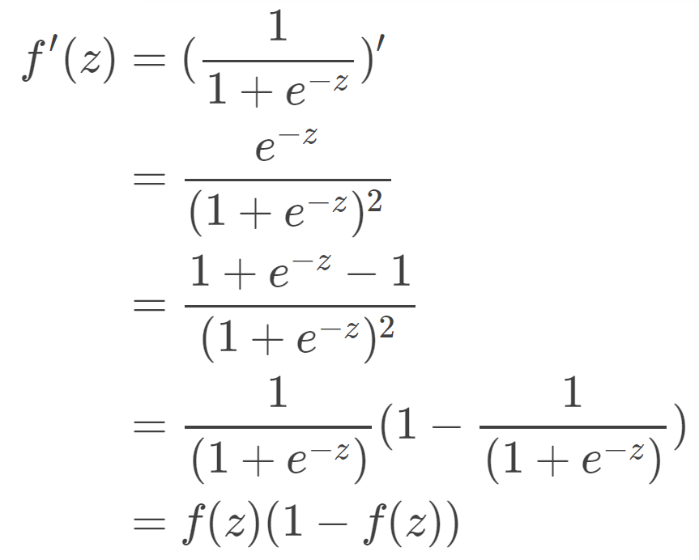
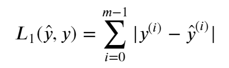
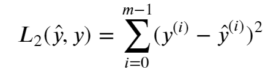

Ng - DL Exercise
The following notes are taken following the course Neural Networks and Deep Learning by Andrew Ng, please refer to coursera.com for further study.
- - - - - - - - - - - - - - - 0 1 - - - - - - - - - - - - - - -
[ B A C K ]
1 Basic functions with numpy
1.0 - what is numpy?
Numpy is the main package for scientific computing in Python. It is maintained by a large community (www.numpy.org). In this exercise you will learn several key numpy functions such as
np.exp,np.log, andnp.reshape.
1.1 - Sigmoid function by np.exp()
The following steps start with math.exp() , then compare with np.exp() applying in sigmoid function for better indicating why np.exp() is preferable to math.exp().
Sigmoid function in python:

1 | # call a function formatting in package_name.function() |
However, there are some differences:
The difference between np.function(x) and math.function(x) is:
- when variable
xis not only a real number but a vector or a matrix,np.function()could compute for every elementxwhilemath.function(x)could only compute a single real number. - But in Deep Learning, we mostly use matrices and vectors, therefore numpy is more useful.
1 | input: |
1.2 - Sigmoid Gradient
Sigmoid function’s derivative shows as below:

Therefore, it could be divided into two steps:
- Set s to be the sigmoid of
x. You might find your sigmoid(x) function useful. - Compute
𝜎′(𝑥)=𝑠(1−𝑠)
1 | input: |
1.3 - Reshaping arrays
when you read an image as the input of an algorithm you convert it to a vector of shape (L∗H∗D,1). In other words, you “unroll”, or reshape, the 3D array into a 1D vector.
X.shape[]is used to get the shape (dimension) of a matrix/vector X.X.reshape(...)is used to reshape X into some other dimension.
Implementing it by coupling both: x.reshape(x.shape[0] * x.shape[1] * x.shape[2],1)
1 | input: |
1.4 - Normalizing rows
Why and How?
It often leads to a better performance because gradient descent converges faster after normalization.
Here, by normalization we mean changing x to 𝑥/‖𝑥‖ (dividing each row vector of x by its norm).
Step 1: find norm
by np.linalg.norm(X,ord=Y,axis=Z,keepdims=True/False)
X= inputY= type of normalization, in the exercise is 2, refer to numpy.linalg.normZ= 1 if it’s row, 0 if it’s columnkeepdims= True to broadcast correctly against the original X
Step 2: X/X_norm
broadcasting by
keepdims=True, but don’t use x/=x_norm
Exercise with Softmax function
1 | input: |
- - - - - - - - - - - - - - - 0 2 - - - - - - - - - - - - - - -
[ B A C K ]
2 - Vectorization
As you may have noticed, the vectorized implementation is much cleaner and more efficient. For bigger vectors/matrices, the differences in running time become even bigger.
Note thatnp.dot()performs a matrix-matrix or matrix-vector multiplication. This is different fromnp.multiply()and the*operator (which is equivalent to.*in Matlab/Octave), which performs an element-wise multiplication.
Implement the L1 and L2 loss function
|  |  |
|---|---|
by abs() |
by np.dot() |
1 | # Loss function 1 |
- - - - - - - - - - - - - - - 0 3 - - - - - - - - - - - - - - -
[ B A C K ]